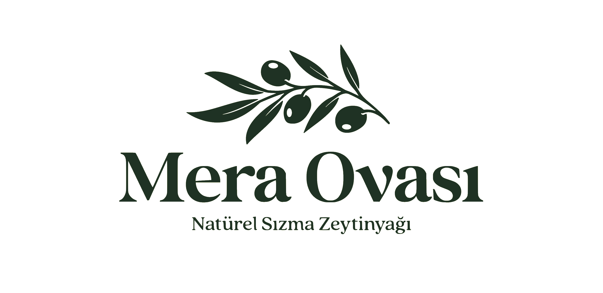

Marmara Bölgesi
Marmara Bölgesi, Gemlik ve Trilye çevresindeki üretim kültürüyle dengeli ve yumuşak karakterli yağlarıyla bilinir.
Marmara Bölgesi odaklı zeytinyağı markaları, benzer bölgeler ve ilgili zeytin çeşitleri. 7 marka listesi.
Bu Sayfadaki Markalar
 Market
Öne Çıkan
Market
Öne Çıkan
Marmarabirlik
Marmara Zeytin Tarım Satış Kooperatifleri Birliği. Türkiye'nin en büyük sofralık zeytin üreticisi olup zeytinyağı ürünleri de sunar....

Premium / Butik Öne ÇıkanMera Ovası
Marmara bölgesinde, Erdek çevresindeki Gemlik tipi zeytinlerden butik üretim yapan artizanal zeytinyağı markası. Küçük partiler halinde soğuk sıkım natürel sızma zeytinyağı üretir....
Artem Oliva
Butik üretim odaklı natürel sızma zeytinyağı markası....
 Bölgesel / Yerel
Bölgesel / Yerel
Gemlika
Gemlik zeytininden üretilen natürel sızma zeytinyağına odaklanan bölgesel marka....
 Premium / Butik
Premium / Butik
Granpa
Marmara bölgesi odaklı üretici marka. Trilye/Gemlik hattında natürel sızma ürünleriyle öne çıkar....
 Bölgesel / Yerel
Bölgesel / Yerel
Trilye
Bursa'nın Mudanya ilçesindeki tarihi Trilye (Tirilye) bölgesinden adını alan zeytinyağı markası. Bölgenin zengin zeytin mirasını yansıtır....
 Bölgesel / Yerel
Bölgesel / Yerel
Zeytursan
Marmara bölgesinde zeytinyağı üretimi ve işleme yapan firma. Hem sofralık zeytin hem de zeytinyağı ürünleri sunar....